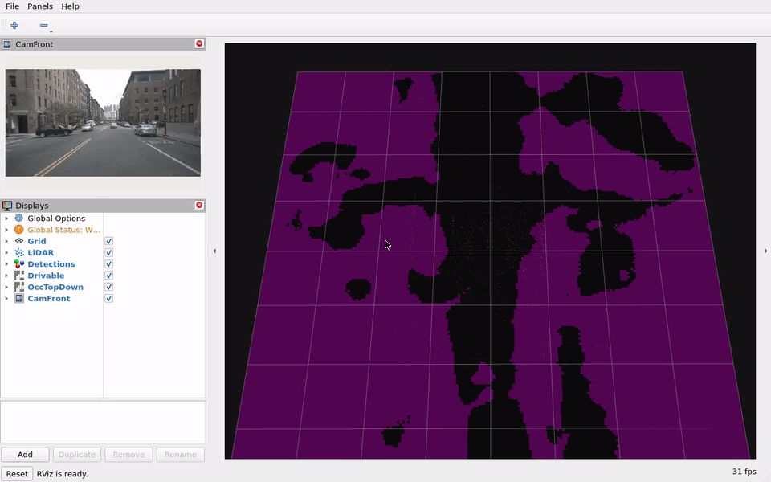
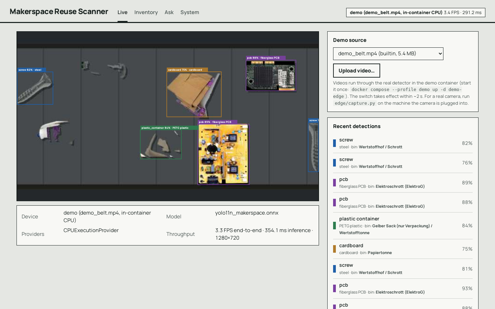
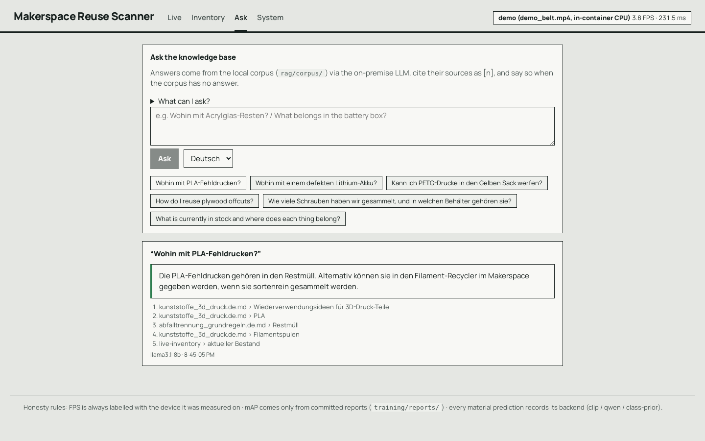
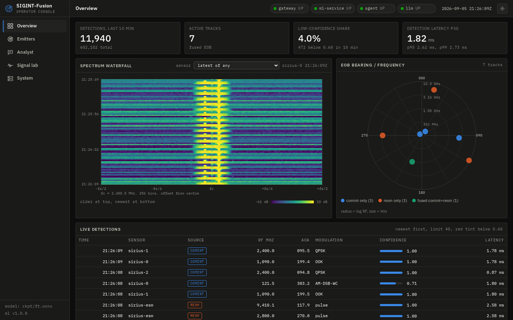
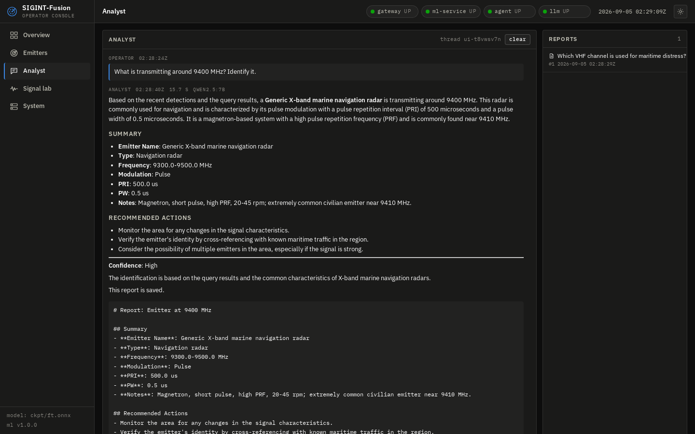

3+ years in automotive ADAS and perception (Continental AG / AUMOVIO), currently researching end-to-end autonomy (SparseDrive) alongside an M.Sc. in AI for Autonomous Driving at FAU Erlangen-Nürnberg. I build perception systems the whole way down: BEV LiDAR-camera-radar fusion, transformer encoders and multitask heads, then the unglamorous part - ONNX, TensorRT FP16/INT8, ROS 2 C++, Rust, OTA fleet rollout - until it runs in real time on hardware I can actually measure.
Every number on this page is measured on stated hardware. Where something failed, did not help, or could not be measured, it says so.
Camera + LiDAR + radar multitask BEV perception, exported to TensorRT and deployed as a ROS 2 C++ node, with off-road transfer and a vision-language safety interface.
Four replay segments: urban perception + VLA · hazard drive (Qwen2.5-VL LoRA VLA plus a deterministic fail-safe rule escalating APPROACH → WAIT → STOP as a pedestrian enters the corridor, VLA grounded on GT perception) · night/wet scene · GOOSE off-road 8-class BEV segmentation in rain.
An open-source off-highway perception stack built on a zero-cost GPU budget: six cameras (LSS), LiDAR pillars and 5-sweep radar pillars fused into a shared 200x200 BEV by a deformable-attention encoder, feeding 3D detection (CenterPoint), BEV segmentation and 3D occupancy heads under a Kendall uncertainty-weighted multitask loss. Exported as static-shape ONNX (opset 17, no custom TensorRT plugins) and deployed as TensorRT FP16/INT8 engines behind a ROS 2 Humble C++ node. Includes a 14-stage DVC pipeline with hard-example mining, adverse-weather and radar-dropout robustness studies, GOOSE off-road transfer, and a VLA task-grounding interface for wheel-loader action primitives with an ISO 21448 hazard mapping.

rviz2 replay of the deployed ROS 2 node, recorded in the ros:humble container on the L4 FP16 engine.
One aerial-detection model compressed to 3.2 MB INT8 and shipped to a 20-device edge fleet through signed OTA canary rollouts, with a Rust inference runtime parity-tested against Python.
The full lifecycle of an edge model rather than just its training run: aero_v1 (VisDrone + DOTA-v1, 12,519 / 2,263 / 1,610 images, ~500k boxes) → YOLO11n at 960 px → static-shape ONNX with NMS outside the graph → INT8 post-training quantization → release gates → signed bundles → MQTT canary rollout across 20 Docker agents with automatic rollback. A second inference path is written in Rust (ort 2.0-rc.13) and CI-gated to box-level IoU > 0.99 against the Python runtime, plus a Control Room GUI for the fleet.
| Variant | p95 latency | mAP@0.5 | File size |
|---|---|---|---|
| FP32 @640 | 26.3 ms | 0.569 | 10.61 MB |
| INT8 @640 (shipped) | 29.6 ms | 0.523 | 3.17 MB |
| FP32 @416 | 12.8 ms | 0.440 | 10.51 MB |
| INT8 @416 | 13.1 ms | 0.396 | 3.07 MB |
prepare_qat_fx; structured pruning found 0 prunable groups on YOLO11; distillation gave no gain
(0.6835 vs 0.6878) and was not shipped. Jetson, Pi 5 and Coral rows stay unmeasured - no such hardware.
Edge camera detects reusable parts on a belt, a FastAPI + pgvector service tracks them as live inventory, and an on-premise German/English RAG assistant answers disposal questions with citations.


Four containers, one compose up: an edge worker running YOLO11n / ONNX on a video or webcam
stream, a FastAPI + Postgres/pgvector hub with WebSocket live feed and dedupe, a React GUI, and a
fully on-premise RAG stack (Ollama llama3.1:8b + nomic-embed-text) over a bilingual disposal corpus.
Retrieval is hybrid - dense vectors plus IDF-weighted Postgres full-text lexical search - which was added
after a measured failure, and stock questions are grounded on a live inventory snapshot instead of being answered
from the model's memory.
screw (0.995) and pcb
(0.994) are studio single-object shots and inflated, battery (0.030) and tool (0.049) have
too little data to be usable, and 6 of 15 planned classes have no data at all. The dominant error is missed
detection, not confusion. No Raspberry Pi 5 benchmark - no device. Refusal scoring is a regex heuristic, so the
report ships every answer verbatim for manual review.
Simulated RF sensors stream I/Q captures through a Java ingest gateway and Kafka into an ONNX modulation classifier, a Kalman/Hungarian emitter fuser, and a RAG analyst agent that answers operator questions and writes reports.


Nine containerised services with health checks: a Spring Boot 3 / Java 21 validated ingest gateway, Kafka transport, a Python consumer running ONNX Runtime classification plus classical DSP (Welch PSD, STFT, vectorised CA-CFAR, DBSCAN pulse deinterleaving), a Kalman + Hungarian fuser building the electronic order of battle in Postgres, a pgvector hybrid-retrieval corpus, a LangGraph analyst agent with 8 tools exposed over MCP, and a React operator console. The classifier is a ResNet-1D trained on real DeepSig RadioML 2018.01A, pretrained on 2016.10a-layout frames and fine-tuned.
A GenAI agent over a silicon validation database that answers the question a lab actually cares about: does an ML anomaly model beat the spec-limit screen already in use?
A LangGraph agent with 14 audited tools exposed over MCP turns 240 validation runs and 92,160 measurements into reports, diagrams and AEC-Q100 test plans, behind read-only SQL guards. The modelling side compares five detectors on a split grouped by device serial, so no die appears on both sides of the split.
Ongoing M.Sc. research at AUMOVIO on the SparseDrive end-to-end driving model: improving safety-critical vulnerable-road-user detection on nuScenes through C++/Python point-cloud pre-processing and model analysis, with ISO 21448 (SOTIF) safety mapping. Private while in progress.
A code-generation LM specialised for safety-critical embedded C: data curation, distributed LoRA/FSDP fine-tuning, a custom fused RMSNorm Triton kernel, vLLM serving (bf16 / AWQ INT4), and an evaluation harness that scores generations by target compile rate, MISRA-C cleanliness and unit tests rather than by "does it run". Pipeline is complete; no benchmark run is published yet.
github.com/pavanyadava007/embedded-codegen-lm →Closed-loop autonomous-driving architecture concept: fleet data ingestion, cloud auto-labelling of 3D ground truth via 4D reconstruction, and deployment of compressed, latency-optimised perception models to constrained edge devices. Design study, not a measured system.
github.com/pavanyadava007/End-to-End-Scalable-4D-Perception-and-Latency →Technical challenge submission: profiling and optimising the LatentSync lip-sync diffusion pipeline for inference cost and throughput.
github.com/pavanyadava007/latentsync-optimization-vidlab7 →SparseDrive end-to-end model research (VRU detection, point-cloud pre-processing in C++/Python); MLOps evaluation tooling reporting mAP and precision-recall per test scenario; radar test automation.
ADAS validation workflows with deep learning, sensor fusion and image/video processing; real-time visualisation tooling; Docker-containerised deployment.
CV and Transformer models for series Traffic Sign Recognition; landmark detection, automatic camera calibration, ODD testing; KPI-evaluation pipelines saving 30+ hours/week, under ISO 26262 (ASIL-B) and MISRA C++.
BEV perception (LSS, deformable attention), 3D detection (CenterPoint, PointPillars), semantic segmentation, occupancy prediction, multitask learning, LiDAR-camera-radar fusion, end-to-end autonomy, 2D detection (YOLO11), domain-shift evaluation, RF modulation classification, classical DSP (PSD, STFT, CFAR), Kalman/Hungarian multi-target fusion, few-shot and self-supervised (BYOL) transfer
TensorRT (FP16 / INT8 PTQ), static-shape ONNX export and parity testing, ONNX Runtime (Python, Rust, WebAssembly), ROS 2 Humble C++ nodes, quantization / pruning / distillation, latency and memory benchmarking, Docker
DVC pipelines, MLflow, Weights & Biases, GitHub Actions CI, pytest, ruff, signed OTA bundles, MQTT canary rollout with automatic rollback, Kafka, Spring Boot / Java 21, FastAPI, Postgres/pgvector, React, Docker Compose, distributed GPU training (Slurm, FSDP)
Qwen2.5-VL LoRA fine-tuning, vision-language action grounding with deterministic safety overrides, on-premise RAG (Ollama, hybrid dense + lexical retrieval, citation and refusal evaluation), agentic tool use over MCP, vLLM serving
ISO 26262 (ASIL-B), ISO 21448 (SOTIF), MISRA C++, hazard analysis and release gates, automated KPI pipelines, simulation-based validation, HIL tooling
Python, C++, Rust, C, SQL, TypeScript. English (C1), German (B2), Kannada, Hindi.